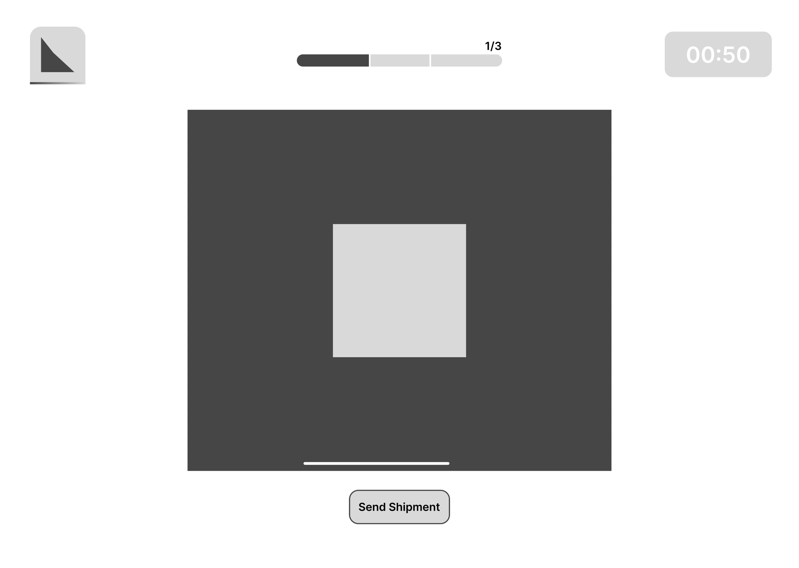
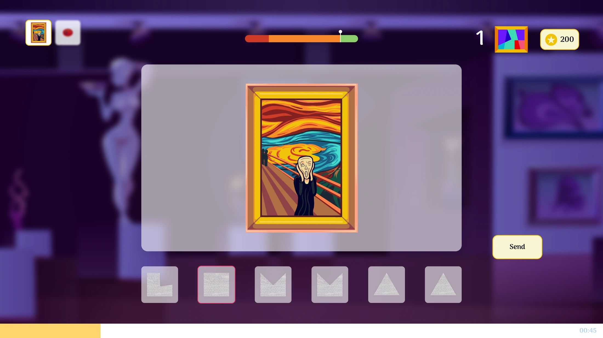
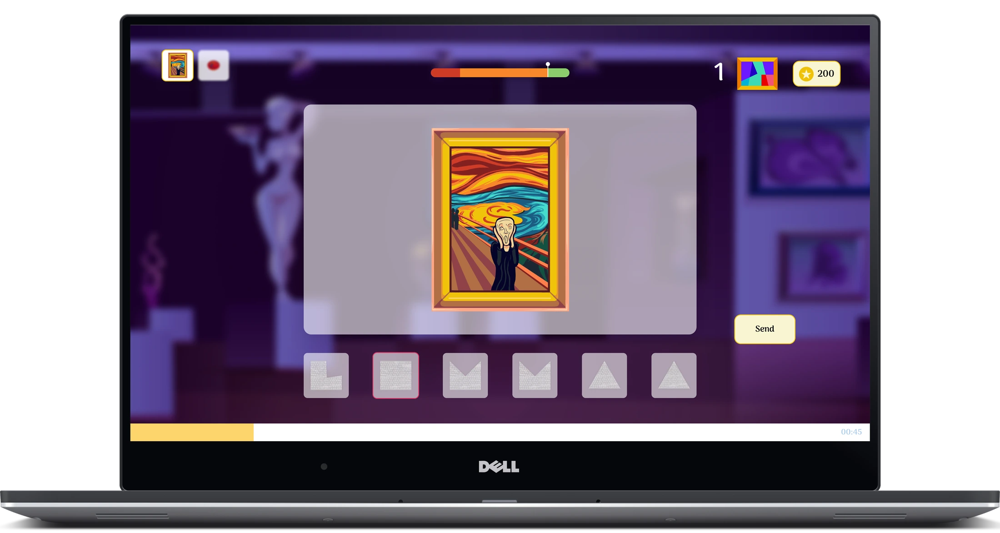
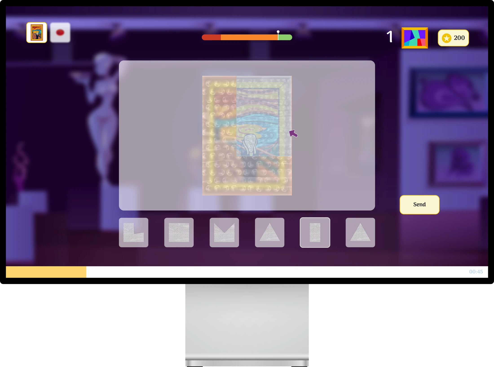
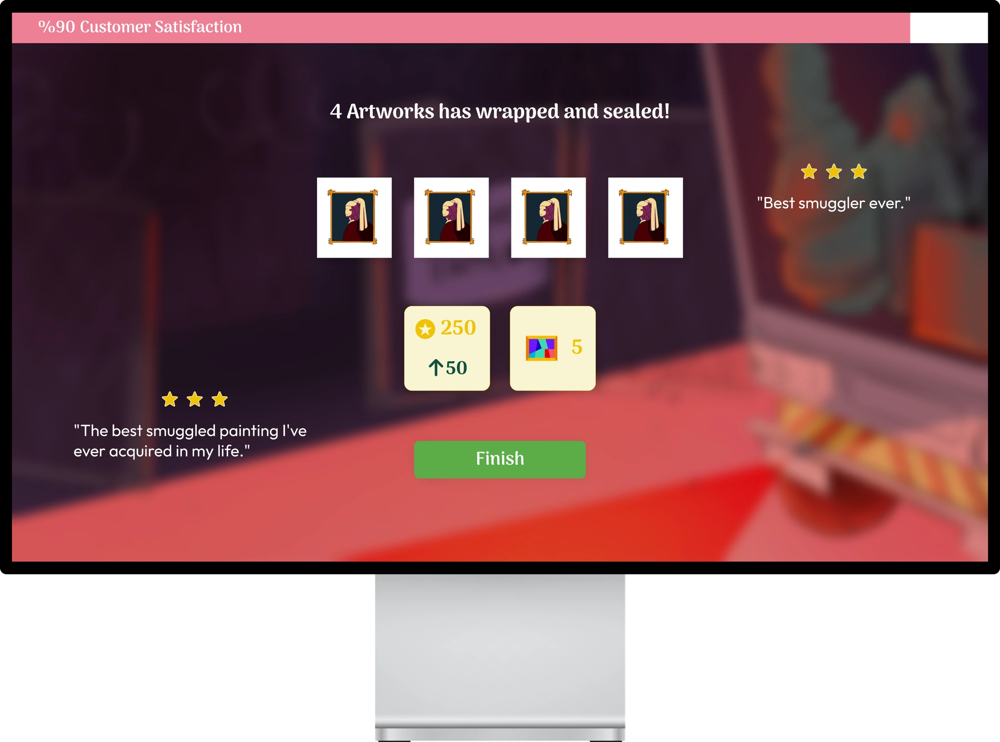
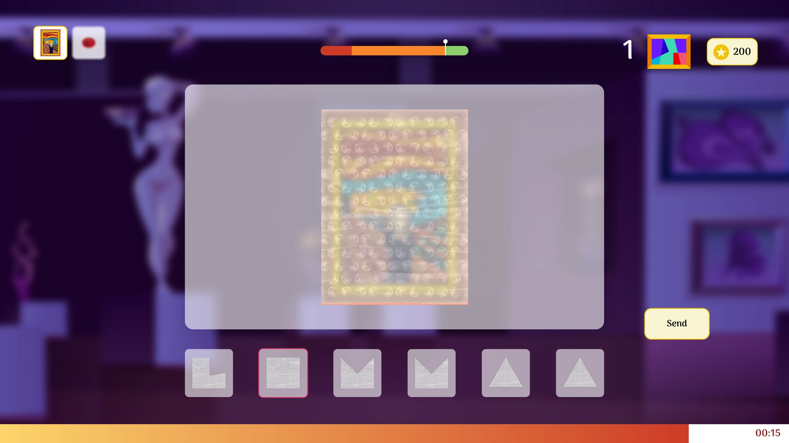
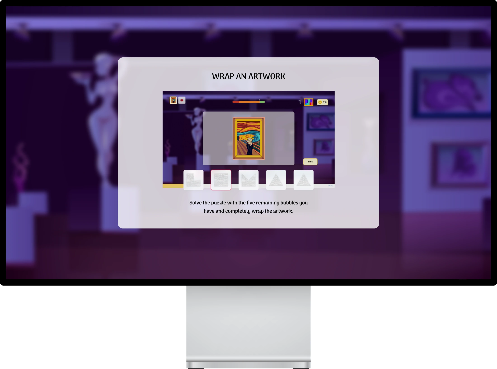
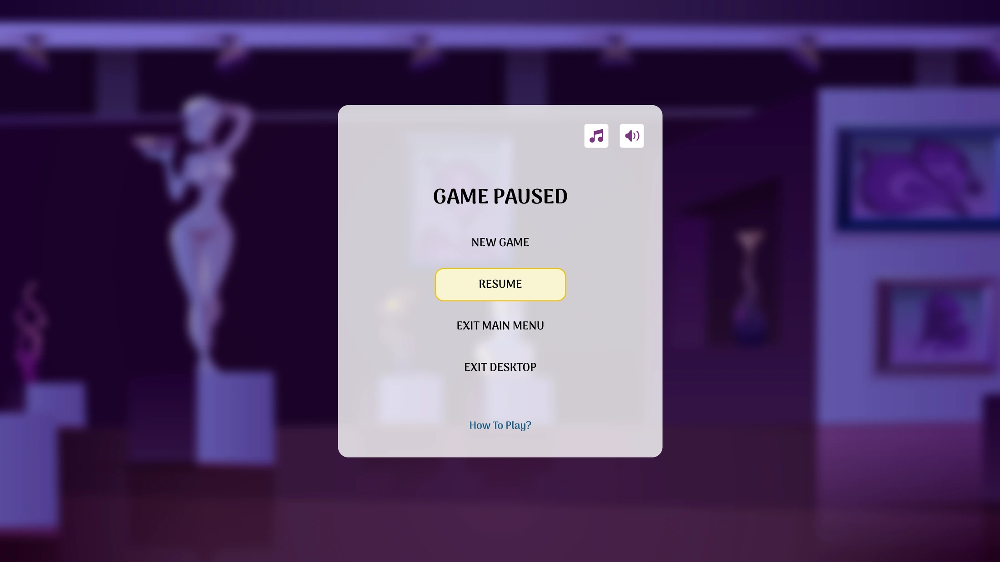

STEAL & SEAL · GROUP PROJECT
Handle with care.
Steal with style.
A playful art-smuggling game where wrapping becomes a puzzle.
MY ROLE
UX/UI Designer
MY FOCUS
HUD - Components - Interactions
CONTEXT
Game Design
WHEN
Global Game Jam 2024
> 01 / THE INTERFACE CHALLENGE
The artwork is fragile.
The clock is ticking.
Keep the UI clear.
Players need to wrap the artworks with the available bubble shapes before sending them off. The main challenge is the pressure of the time and the quality of wrapping the stolen artworks.
The UI keeps the artwork central and puts time, tools and progress within reach. This design decision follows the interface structure, visual direction and supporting components of the project.
> 02 / FROM SKETCH TO ATMOSPHERE
First, the hierarchy.
Then, the game world.
The low-fi wireframe establishes the workspace, timer and shipment action. The high-fi UI adds the gallery atmosphere and places wrapping tools directly below the artwork.

Early wireframe

High-Fi UI
> 03 / FOCUS
One artwork.
A clear workspace.
The artwork was placed in the center. The available wrapping shapes are close by, ensuring focus remains on the current task.
Let the workspace dominate the screen.


> 04 / WRAP
Choose a shape.
Find the fit.
The wrapping state shows the material draped over the artwork, where color-coded blue and red bubble wrap lets the user know if the shape fits correctly.
Present the interaction in context, supported by
instant visual feedback.
> 05 / CONCLUDE
The work is done.
Make it count.
The final screen combines and shows completed artworks, user satisfaction, and rewards in order to conclude the round.
Separate the outcome from the active wrapping task.

> 06 / READ THE HUD
A lot happening.
One place to focus.

> 01 / WORKSPACE
The artwork takes visual priority at the centre.
> 02 / WRAPPING TOOLS
Shapes are directly below the active task.
> 03 / TIME & PROGRESS
The countdown, quality and resources frame the workspace.
> 07 / EASY TO FOLLOW TUTORIAL
Teach the task.
Give the player a pause.
A short tutorial pairs an instruction with a gameplay example. The pause screen creates a separate space for navigation and audio controls.

Tutorial / Explain in context

Pause / Step out of the task
> 08 / PROJECT SUMMARY
A playful world.
A readable interface.
UI design
The UI progresses from an early wireframe to a themed gameplay layout, with tutorial, menu, pause and result screens supporting the experience.
The player journey
Understand the task, choose wrapping shapes, track the round and see the result. Each state gives the player a clear place in the game loop.